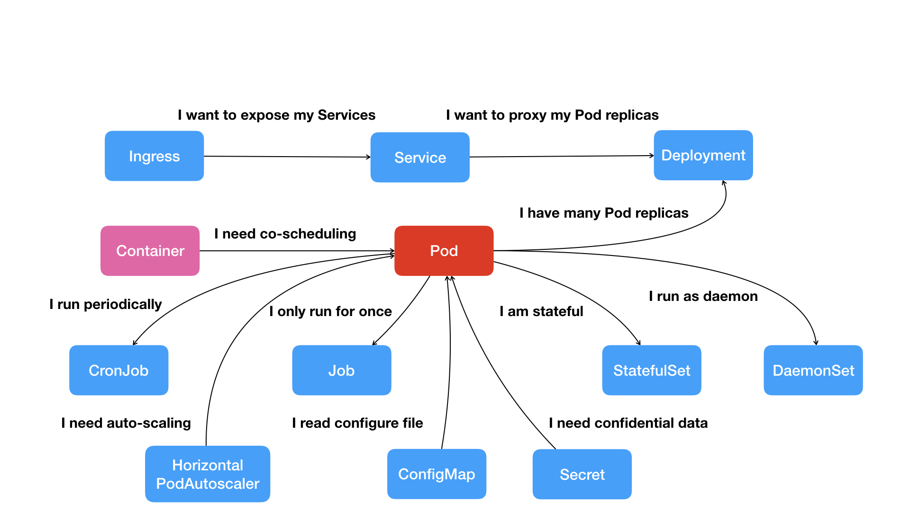

在前面的四篇文章中，我以 Docker 项目为例，一步步剖析了 Linux 容器的具体实现方式。通过这些讲解你应该能够明白：一个 “容器”，实际上是一个由 Linux Namespace、Linux Cgroups 和 rootfs 三种技术构建出来的进程的隔离环境。
从这个结构中我们不难看出，一个正在运行的 Linux 容器，其实可以被 “一分为二” 地看待：
一组联合挂载在 /var/lib/docker/aufs/mnt 上的 rootfs，这一部分我们称为 “容器镜像”（Container Image），是容器的静态视图；
一个由 Namespace+Cgroups 构成的隔离环境，这一部分我们称为 “容器运行时”（Container Runtime），是容器的动态视图。
更进一步地说，作为一名开发者，我并不关心容器运行时的差异。因为，在整个 “开发 - 测试 - 发布” 的流程中，真正承载着容器信息进行传递的，是容器镜像，而不是容器运行时。
这个重要假设，正是容器技术圈在 Docker 项目成功后不久，就迅速走向了 “容器编排” 这个 “上层建筑” 的主要原因：作为一家云服务商或者基础设施提供商，我只要能够将用户提交的 Docker 镜像以容器的方式运行起来，就能成为这个非常热闹的容器生态图上的一个承载点，从而将整个容器技术栈上的价值，沉淀在我的这个节点上。
更重要的是，只要从我这个承载点向 Docker 镜像制作者和使用者方向回溯，整条路径上的各个服务节点，比如 CI/CD、监控、安全、网络、存储等等，都有我可以发挥和盈利的余地。这个逻辑，正是所有云计算提供商如此热衷于容器技术的重要原因：通过容器镜像，它们可以和潜在用户（即，开发者）直接关联起来。
从一个开发者和单一的容器镜像，到无数开发者和庞大的容器集群，容器技术实现了从 “容器” 到 “容器云” 的飞跃，标志着它真正得到了市场和生态的认可。
这样， 容器就从一个开发者手里的小工具，一跃成为了云计算领域的绝对主角；而能够定义容器组织和管理规范的“容器编排”技术，则当仁不让地坐上了容器技术领域的“头把交椅”。
这其中，最具代表性的容器编排工具，当属 Docker 公司的 Compose+Swarm 组合，以及 Google 与 RedHat 公司共同主导的 Kubernetes 项目。
我在前面介绍容器技术发展历史的四篇预习文章中，已经对这两个开源项目做了详细地剖析和评述。所以，在今天的这次分享中，我会专注于本专栏的主角 Kubernetes 项目，谈一谈它的设计与架构。
跟很多基础设施领域先有工程实践、后有方法论的发展路线不同，Kubernetes 项目的理论基础则要比工程实践走得靠前得多，这当然要归功于 Google 公司在 2015 年 4 月发布的 Borg 论文了。
Borg 系统，一直以来都被誉为 Google 公司内部最强大的 “秘密武器”。虽然略显夸张，但这个说法倒不算是吹牛。
因为，相比于 Spanner、BigTable 等相对上层的项目，Borg 要承担的责任，是承载 Google 公司整个基础设施的核心依赖。在 Google 公司已经公开发表的基础设施体系论文中，Borg 项目当仁不让地位居整个基础设施技术栈的最底层。
图片来源：Malte Schwarzkopf. “Operating system support for warehouse-scale computing”. PhD thesis. University of Cambridge Computer Laboratory (to appear), 2015, Chapter 2.
上面这幅图，来自于 Google Omega 论文的第一作者的博士毕业论文。它描绘了当时 Google 已经公开发表的整个基础设施栈。在这个图里，你既可以找到 MapReduce、BigTable 等知名项目，也能看到 Borg 和它的继任者 Omega 位于整个技术栈的最底层。
正是由于这样的定位，Borg 可以说是 Google 最不可能开源的一个项目。而幸运地是，得益于 Docker 项目和容器技术的风靡，它却终于得以以另一种方式与开源社区见面，这个方式就是 Kubernetes 项目。
所以，相比于 “小打小闹” 的 Docker 公司、“旧瓶装新酒” 的 Mesos 社区，Kubernetes 项目从一开始就比较幸运地站上了一个他人难以企及的高度：在它的成长阶段，这个项目每一个核心特性的提出，几乎都脱胎于 Borg/Omega 系统的设计与经验。更重要的是，这些特性在开源社区落地的过程中，又在整个社区的合力之下得到了极大的改进，修复了很多当年遗留在 Borg 体系中的缺陷和问题。
所以，尽管在发布之初被批评是 “曲高和寡”，但是在逐渐觉察到 Docker 技术栈的 “稚嫩” 和 Mesos 社区的 “老迈” 之后，这个社区很快就明白了：Kubernetes 项目在 Borg 体系的指导下，体现出了一种独有的 “先进性” 与 “完备性”，而这些特质才是一个基础设施领域开源项目赖以生存的核心价值。
为了更好地理解这两种特质，我们不妨从 Kubernetes 的顶层设计说起。
首先，Kubernetes 项目要解决的问题是什么？
编排？调度？容器云？还是集群管理？
实际上，这个问题到目前为止都没有固定的答案。因为在不同的发展阶段，Kubernetes 需要着重解决的问题是不同的。
但是，对于大多数用户来说，他们希望 Kubernetes 项目带来的体验是确定的：现在我有了应用的容器镜像，请帮我在一个给定的集群上把这个应用运行起来。
更进一步地说，我还希望 Kubernetes 能给我提供路由网关、水平扩展、监控、备份、灾难恢复等一系列运维能力。
等一下，这些功能听起来好像有些耳熟？这不就是经典 PaaS（比如，Cloud Foundry）项目的能力吗？
而且，有了 Docker 之后，我根本不需要什么 Kubernetes、PaaS，只要使用 Docker 公司的 Compose+Swarm 项目，就完全可以很方便地 DIY 出这些功能了！
所以说，如果 Kubernetes 项目只是停留在拉取用户镜像、运行容器，以及提供常见的运维功能的话，那么别说跟 “原生” 的 Docker Swarm 项目竞争了，哪怕跟经典的 PaaS 项目相比也难有什么优势可言。
而实际上，在定义核心功能的过程中，Kubernetes 项目正是依托着 Borg 项目的理论优势，才在短短几个月内迅速站稳了脚跟，进而确定了一个如下图所示的全局架构：
我们可以看到，Kubernetes 项目的架构，跟它的原型项目 Borg 非常类似，都由 Master 和 Node 两种节点组成，而这两种角色分别对应着控制节点和计算节点。
其中，控制节点，即 Master 节点，由三个紧密协作的独立组件组合而成，它们分别是负责 API 服务的 kube-apiserver、负责调度的 kube-scheduler，以及负责容器编排的 kube-controller-manager。整个集群的持久化数据，则由 kube-apiserver 处理后保存在 Ectd 中。
而计算节点上最核心的部分，则是一个叫作 kubelet 的组件。
在 Kubernetes 项目中，kubelet 主要负责同容器运行时（比如 Docker 项目）打交道。 而这个交互所依赖的，是一个称作 CRI（Container Runtime Interface）的远程调用接口，这个接口定义了容器运行时的各项核心操作，比如：启动一个容器需要的所有参数。
这也是为何，Kubernetes 项目并不关心你部署的是什么容器运行时、使用的什么技术实现，只要你的这个容器运行时能够运行标准的容器镜像，它就可以通过实现 CRI 接入到 Kubernetes 项目当中。(一个docker相当于一个线程，一个pod相当于一组紧密协作的线程。把k8s看作数据中心操作系统，它的调度对象是可以完成某种任务的实体，docker只是一种实现而已。相当于又引入了一个抽象中间层)
而具体的容器运行时，比如 Docker 项目，则一般通过 OCI 这个容器运行时规范同底层的 Linux 操作系统进行交互，即：把 CRI 请求翻译成对 Linux 操作系统的调用（操作 Linux Namespace 和 Cgroups 等）。
此外， kubelet 还通过 gRPC 协议同一个叫作 Device Plugin 的插件进行交互. 这个插件，是 Kubernetes 项目用来管理 GPU 等宿主机物理设备的主要组件，也是基于 Kubernetes 项目进行机器学习训练、高性能作业支持等工作必须关注的功能。
而 kubelet 的另一个重要功能，则是调用网络插件和存储插件为容器配置网络和持久化存储. 这两个插件与 kubelet 进行交互的接口，分别是 CNI（Container Networking Interface）和 CSI（Container Storage Interface）。
实际上，kubelet 这个奇怪的名字，来自于 Borg 项目里的同源组件 Borglet。不过，如果你浏览过 Borg 论文的话，就会发现，这个命名方式可能是 kubelet 组件与 Borglet 组件的唯一相似之处。因为 Borg 项目，并不支持我们这里所讲的容器技术，而只是简单地使用了 Linux Cgroups 对进程进行限制。
这就意味着，像 Docker 这样的 “容器镜像” 在 Borg 中是不存在的，Borglet 组件也自然不需要像 kubelet 这样考虑如何同 Docker 进行交互、如何对容器镜像进行管理的问题，也不需要支持 CRI、CNI、CSI 等诸多容器技术接口。
可以说，kubelet 完全就是为了实现 Kubernetes 项目对容器的管理能力而重新实现的一个组件，与 Borg 之间并没有直接的传承关系。
备注：虽然不使用 Docker，但 Google 内部确实在使用一个包管理工具，名叫 Midas Package Manager (MPM)，其实它可以部分取代 Docker 镜像的角色。
那么，Borg 对于 Kubernetes 项目的指导作用又体现在哪里呢？
答案是，Master 节点。
虽然在 Master 节点的实现细节上 Borg 项目与 Kubernetes 项目不尽相同，但它们的出发点却高度一致，即：如何编排、管理、调度用户提交的作业？
所以，Borg 项目完全可以把 Docker 镜像看做是一种新的应用打包方式。这样，Borg 团队过去在大规模作业管理与编排上的经验就可以直接 “套” 在 Kubernetes 项目上了。
这些经验最主要的表现就是， 从一开始，Kubernetes 项目就没有像同时期的各种“容器云”项目那样，把 Docker 作为整个架构的核心，而仅仅把它作为最底层的一个容器运行时实现。
而 Kubernetes 项目要着重解决的问题，则来自于 Borg 的研究人员在论文中提到的一个非常重要的观点：
运行在大规模集群中的各种任务之间，实际上存在着各种各样的关系。这些关系的处理，才是作业编排和管理系统最困难的地方。
事实也正是如此。
其实，这种任务与任务之间的关系，在我们平常的各种技术场景中随处可见。比如， 一个 Web 应用与数据库之间的访问关系，一个负载均衡器和它的后端服务之间的代理关系，一个门户应用与授权组件之间的调用关系。
更进一步地说，同属于一个服务单位的不同功能之间，也完全可能存在这样的关系。比如，一个 Web 应用与日志搜集组件之间的文件交换关系。
而在容器技术普及之前，传统虚拟机环境对这种关系的处理方法都是比较 “粗粒度” 的。你会经常发现很多功能并不相关的应用被一股脑儿地部署在同一台虚拟机中，只是因为它们之间偶尔会互相发起几个 HTTP 请求。
更常见的情况则是，一个应用被部署在虚拟机里之后，你还得手动维护很多跟它协作的守护进程（Daemon），用来处理它的日志搜集、灾难恢复、数据备份等辅助工作。
但容器技术出现以后，你就不难发现，在 “功能单位” 的划分上，容器有着独一无二的 “细粒度” 优势：毕竟容器的本质，只是一个进程而已。
也就是说，只要你愿意，那些原先拥挤在同一个虚拟机里的各个应用、组件、守护进程，都可以被分别做成镜像，然后运行在一个个专属的容器中。它们之间互不干涉，拥有各自的资源配额，可以被调度在整个集群里的任何一台机器上。而这，正是一个 PaaS 系统最理想的工作状态，也是所谓 “微服务” 思想得以落地的先决条件。
当然，如果只做到 “封装微服务、调度单容器” 这一层次，Docker Swarm 项目就已经绰绰有余了。如果再加上 Compose 项目，你甚至还具备了处理一些简单依赖关系的能力，比如：一个 “Web 容器” 和它要访问的数据库 “DB 容器”。
在 Compose 项目中，你可以为这样的两个容器定义一个 “link”，而 Docker 项目则会负责维护这个 “link” 关系，其具体做法是：Docker 会在 Web 容器中，将 DB 容器的 IP 地址、端口等信息以环境变量的方式注入进去，供应用进程使用，比如：
DB_NAME=/web/db
DB_PORT=tcp://172.17.0.5:5432
DB_PORT_5432_TCP=tcp://172.17.0.5:5432
DB_PORT_5432_TCP_PROTO=tcp
DB_PORT_5432_TCP_PORT=5432
DB_PORT_5432_TCP_ADDR=172.17.0.5
而当 DB 容器发生变化时（比如，镜像更新，被迁移到其他宿主机上等等），这些环境变量的值会由 Docker 项目自动更新。 这就是平台项目自动地处理容器间关系的典型例子。
可是，如果我们现在的需求是，要求这个项目能够处理前面提到的所有类型的关系，甚至还要能够支持未来可能出现的更多种类的关系呢？
这时，“link” 这种单独针对一种案例设计的解决方案就太过简单了。如果你做过架构方面的工作，就会深有感触：一旦要追求项目的普适性，那就一定要从顶层开始做好设计。
所以， Kubernetes 项目最主要的设计思想是，从更宏观的角度，以统一的方式来定义任务之间的各种关系，并且为将来支持更多种类的关系留有余地。
比如，Kubernetes 项目对容器间的 “访问” 进行了分类，首先总结出了一类非常常见的 “紧密交互” 的关系，即：这些应用之间需要非常频繁的交互和访问；又或者，它们会直接通过本地文件进行信息交换。
在常规环境下，这些应用往往会被直接部署在同一台机器上，通过 Localhost 通信，通过本地磁盘目录交换文件。而在 Kubernetes 项目中，这些容器则会被划分为一个 “Pod”，Pod 里的容器共享同一个 Network Namespace、同一组数据卷，从而达到高效率交换信息的目的。
Pod 是 Kubernetes 项目中最基础的一个对象，源自于 Google Borg 论文中一个名叫 Alloc 的设计。在后续的章节中，我们会对 Pod 做更进一步地阐述。
而对于另外一种更为常见的需求，比如 Web 应用与数据库之间的访问关系，Kubernetes 项目则提供了一种叫作 “Service” 的服务。像这样的两个应用，往往故意不部署在同一台机器上，这样即使 Web 应用所在的机器宕机了，数据库也完全不受影响。可是，我们知道，对于一个容器来说，它的 IP 地址等信息不是固定的，那么 Web 应用又怎么找到数据库容器的 Pod 呢？
所以，Kubernetes 项目的做法是给 Pod 绑定一个 Service 服务，而 Service 服务声明的 IP 地址等信息是 “终生不变” 的。 这个Service 服务的主要作用，就是作为 Pod 的代理入口（Portal），从而代替 Pod 对外暴露一个固定的网络地址。(service是pod的LB?)
这样，对于 Web 应用的 Pod 来说，它需要关心的就是数据库 Pod 的 Service 信息。不难想象，Service 后端真正代理的 Pod 的 IP 地址、端口等信息的自动更新、维护，则是 Kubernetes 项目的职责。
像这样，围绕着容器和 Pod 不断向真实的技术场景扩展，我们就能够摸索出一幅如下所示的 Kubernetes 项目核心功能的 “全景图”。

按照这幅图的线索，我们从容器这个最基础的概念出发，首先遇到了容器间 “紧密协作” 关系的难题，于是就扩展到了 Pod；有了 Pod 之后，我们希望能一次启动多个应用的实例，这样就需要 Deployment 这个 Pod 的多实例管理器；而有了这样一组相同的 Pod 后，我们又需要通过一个固定的 IP 地址和端口以负载均衡的方式访问它，于是就有了 Service。
可是，如果现在两个不同 Pod 之间不仅有 “访问关系”，还要求在发起时加上授权信息。最典型的例子就是 Web 应用对数据库访问时需要 Credential（数据库的用户名和密码）信息。那么，在 Kubernetes 中这样的关系又如何处理呢？
Kubernetes 项目提供了一种叫作 Secret 的对象，它其实是一个保存在 Etcd 里的键值对数据。这样，你把 Credential 信息以 Secret 的方式存在 Etcd 里，Kubernetes 就会在你指定的 Pod（比如，Web 应用的 Pod）启动时，自动把 Secret 里的数据以 Volume 的方式挂载到容器里。这样，这个 Web 应用就可以访问数据库了。
除了应用与应用之间的关系外，应用运行的形态是影响“如何容器化这个应用”的第二个重要因素。
为此，Kubernetes 定义了新的、基于 Pod 改进后的对象。比如 Job，用来描述一次性运行的 Pod（比如，大数据任务）；再比如 DaemonSet，用来描述每个宿主机上必须且只能运行一个副本的守护进程服务；又比如 CronJob，则用于描述定时任务等等。
如此种种，正是 Kubernetes 项目定义容器间关系和形态的主要方法。
可以看到，Kubernetes 项目并没有像其他项目那样，为每一个管理功能创建一个指令，然后在项目中实现其中的逻辑。这种做法，的确可以解决当前的问题，但是在更多的问题来临之后，往往会力不从心。
相比之下，在 Kubernetes 项目中，我们所推崇的使用方法是：
首先，通过一个 “编排对象”，比如 Pod、Job、CronJob 等，来描述你试图管理的应用；
然后，再为它定义一些 “服务对象”，比如 Service、Secret、Horizontal Pod Autoscaler（自动水平扩展器）等。这些对象，会负责具体的平台级功能。
这种使用方法，就是所谓的“声明式 API”。这种 API 对应的“编排对象”和“服务对象”，都是 Kubernetes 项目中的 API 对象（API Object）。
这就是 Kubernetes 最核心的设计理念，也是接下来我会重点剖析的关键技术点。
最后，我来回答一个更直接的问题：Kubernetes 项目如何启动一个容器化任务呢？
比如，我现在已经制作好了一个 Nginx 容器镜像，希望让平台帮我启动这个镜像。并且，我要求平台帮我运行两个完全相同的 Nginx 副本，以负载均衡的方式共同对外提供服务。
如果是自己 DIY 的话，可能需要启动两台虚拟机，分别安装两个 Nginx，然后使用 keepalived 为这两个虚拟机做一个虚拟 IP。
而如果使用 Kubernetes 项目呢？你需要做的则是编写如下这样一个 YAML 文件（比如名叫 nginx-deployment.yaml）：
apiVersion: apps/v1
kind: Deployment
metadata:
name: nginx-deployment
labels:
app: nginx
spec:
replicas: 2
selector:
matchLabels:
app: nginx
template:
metadata:
labels:
app: nginx
spec:
containers:
- name: nginx
image: nginx:1.7.9
ports:
- containerPort: 80
在上面这个 YAML 文件中，我们定义了一个 Deployment 对象，它的主体部分（spec.template 部分）是一个使用 Nginx 镜像的 Pod，而这个 Pod 的副本数是 2（replicas=2）。
然后执行：
$ kubectl create -f nginx-deployment.yaml
这样，两个完全相同的 Nginx 容器副本就被启动了。
不过，这么看来，做同样一件事情，Kubernetes 用户要做的工作也不少嘛。
别急，在后续的讲解中，我会陆续介绍 Kubernetes 项目这种 “声明式 API” 的种种好处，以及基于它实现的强大的编排能力。
拭目以待吧。
总结
首先，我和你一起回顾了容器的核心知识，说明了容器其实可以分为两个部分：容器运行时和容器镜像。
然后，我重点介绍了 Kubernetes 项目的架构，详细讲解了它如何使用 “声明式 API” 来描述容器化业务和容器间关系的设计思想。
实际上，过去很多的集群管理项目（比如 Yarn、Mesos，以及 Swarm）所擅长的，都是把一个容器，按照某种规则，放置在某个最佳节点上运行起来。这种功能，我们称为 “调度”。
而 Kubernetes 项目所擅长的，是按照用户的意愿和整个系统的规则，完全自动化地处理好容器之间的各种关系。 这种功能，就是我们经常听到的一个概念：编排。
所以说，Kubernetes 项目的本质，是为用户提供一个具有普遍意义的容器编排工具。
不过，更重要的是，Kubernetes 项目为用户提供的不仅限于一个工具。它真正的价值，乃在于提供了一套基于容器构建分布式系统的基础依赖。关于这一点，相信你会在今后的学习中，体会的越来越深。
思考题
这今天的分享中，我介绍了 Kubernetes 项目的架构。你是否了解了 Docker Swarm（SwarmKit 项目）跟 Kubernetes 在架构上和使用方法上的异同呢？
在 Kubernetes 之前，很多项目都没办法管理 “有状态” 的容器，即，不能从一台宿主机 “迁移” 到另一台宿主机上的容器。你是否能列举出，阻止这种 “迁移” 的原因都有哪些呢？